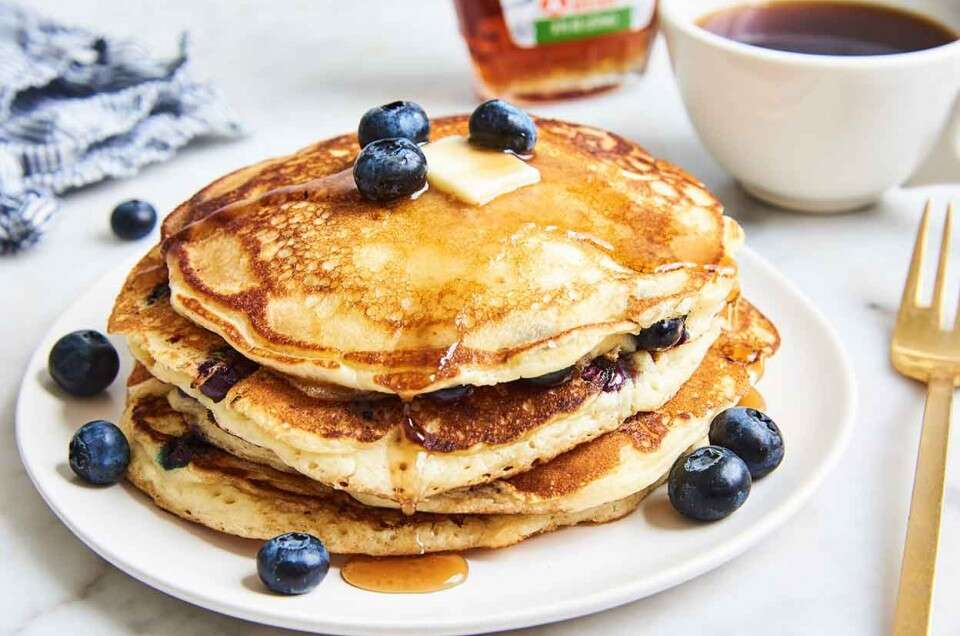

Blueberry Pancakes

Description
Everyone loves the perfect breakfast (or dinner) of pancakes. With a slight blueberry twist, you'll be on the road to a full stomach and a happy body in no time!
Ingredients
- 2 large eggs
- 1 cup (227g) milk
- 2 teaspoons Pure Vanilla Extract, optional
- 3 tablespoons (43g) melted butter or 3 tablespoons (35g) vegetable oil
- 1 1/2 cups (180g) All purpose flour
- 3/4 teaspoon salt
- 2 teaspoons baking powder
- 2 tablespoons (25g) granulated sugar
- 3/4 cup (85g) blueberries, fresh or frozen
Steps to Success
- Heat a griddle to 350°F. If you don't have a griddle, heat a large frying pan over medium-low to medium heat. Grease the griddle. When it's hot enough, a drop of water will skitter across the surface, evaporating immediately.
- Beat the eggs, milk, and vanilla until light and foamy, about 3 minutes at high speed of a stand or hand mixer. Stir in the melted butter or oil.
- Add the flour, salt, baking powder, and sugar, stirring just to combine. A few lumps are OK. Set the batter aside to rest for a couple of minutes; it'll thicken a bit as it stands. Thin the batter with additional milk if it's not pourable consistency.
- Drop the batter by 1/4 cupfuls onto the prepared griddle or pan; a muffin scoop works well here. Sprinkle 1 tablespoon berries atop each pancake.
- Cook the cakes till they're golden brown on the bottom, about 2 minutes. Flip them over, and cook till the other side is golden, 2 to 2 1/2 minutes.
- Serve the pancakes immediately. Or transfer them to a platter, cover, and keep warm in a 200°F oven. Enjoy with butter and maple syrup.